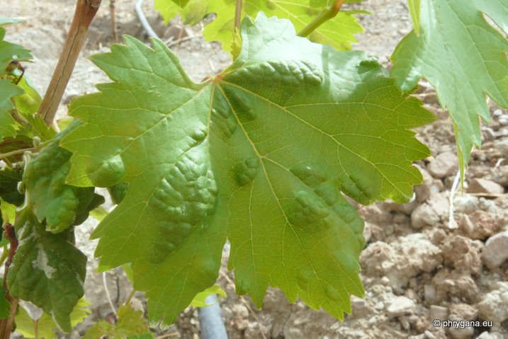
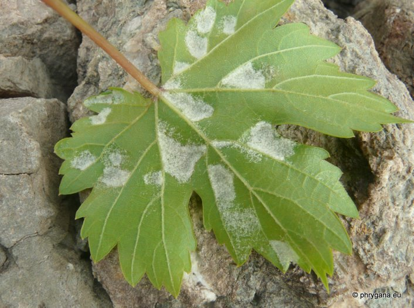
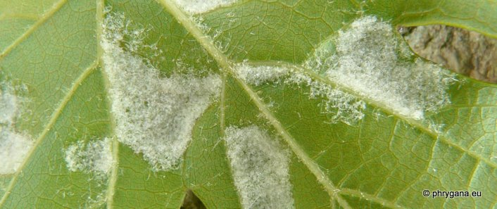
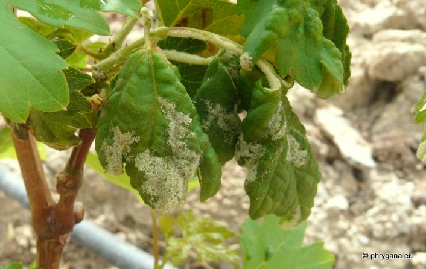

| PHRYGANA | Fauna | Flora |
additions nouveautés |
espèces species |
contact -
info - commentaires phrygana1 (at) gmail.com |
| diversité crétoise -- Cretan diversity | Galles et mines | ||||
| Colomerus vitis (Pagenstecher 1857) |
| 268 | Fauna | PROSTIGMATA | ERIOPHYIDAE | Colomerus Laurenti 1768 |
|
 Colomerus vitis Melambes (Agios Giorgos) 21 septembre 2011 |
| en: Grape erineum mite fr: le Phytopte de l'érinose de la vigne | |
| Petit acarien causant une galle sur sa plante-hôte: la vigne Vitis sp. | |
| Grandeur: les adultes peuvent atteindre 0,2 mm, sont blanchâtres, invisibles à l'oeil nu; ont 2 paires de pattes antérieures | |
| 5 à 7 générations annuelles | |
| Hivernage sous l'écorce au pied du sarment ou les écailles des bourgeons | |
| Oeufs oblongs blanchâtres pondus dans le feutrage; développement complet en 2- 3 semaines | |
| Galle: boursouflures sur la face supérieure de la feuille; feutrage blanc devant brunâtre sur la face inférieure; le feutrage est dû à l'allongement des poils; boursouflures induites par des piqures sur la face inférieure | |
| Organes attaqués: jeunes feuilles, bourgeons, pétioles, vrilles | |
| Indigénat en Crète: indigène -- introduit | |
| Biotopes en Crète: vignobles | |
| Altitudes: 0 - 1000 m | |
| Distribution: Europe centrale et de l'est, Europe du sud-est, Australie, Afrique du Sud, Amériques | |
| Note: Colomerus vitis est souvent dispersé par les plants de pépinière. | |
| Les dégats sont en général peu importants | |
|
 Colomerus vitis Melambes (Agios Giorgos) 21 septembre 2011 |
|
 Colomerus vitis Melambes (Agios Giorgos) 21 septembre 2011 |
|
 Colomerus vitis Melambes (Agios Giorgos) 21 septembre 2011 |
| 25 septembre 2011 |
| © paul fontaine -- © Phrygana.eu 2007 -- 2013 |